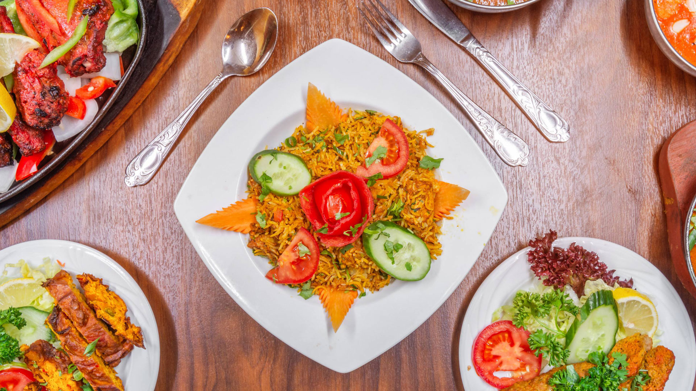
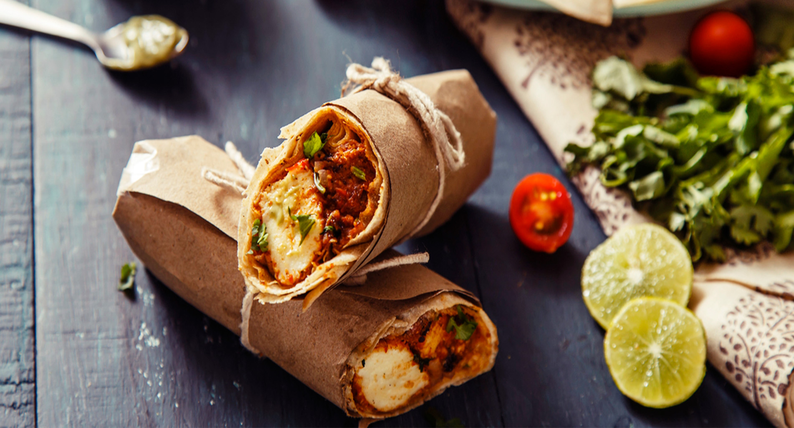

Chicken tikka massalum
Geroosterde kipfilet bereid in yoghurt, room, cashewnoten en verse koriander.
Bijgerecht: Basmati Rice of NaanIndiaas restaurant aan de Prinsenkade
Sinds 1985 de smaak van India in Breda: rijke curry's, gerechten uit de tandoori klei-oven en veel om vegetarisch van te genieten.
Elke dag geopend vanaf 17:00 · Prinsenkade 11
Ons verhaal
The Taj Mahal Breda opende in 1985 de deuren voor gasten. Op 1 november 1996 nam de huidige eigenaar, de heer Parwaiz Yousaf Awan, het stokje over om de traditie voort te zetten.
Wie bij ons komt, kiest uit een uitgebreide kaart: milde en pittige curry's, de beroemde rode tandoori kip, vegetarische gerechten, vers naanbrood en nog veel meer.
Wij zijn dagelijks geopend van 17:00 tot 22:00.

Chef's selection
Geroosterde kipfilet bereid in yoghurt, room, cashewnoten en verse koriander.
Bijgerecht: Basmati Rice of NaanCurry bereid met mosterdolie en knoflook.
Bijgerecht: Basmati Rice of NaanDe beroemde rode kip, gemarineerd in yoghurt met heerlijke specerijen en bereid in de tandoor klei-oven.
Groentefrituur van gesnipperde uien in een pikant beslag.
Een pittige Indiase snack, normaal gegeten als voorgerecht en razend populair in heel India, van Odisha tot Kerala en van Karnataka tot Maharashtra. Of het nu Bengalen of Punjab is: iedereen is er dol op, en je vindt hem op elke straathoek. Eigenlijk is het het streetfood van het Indiase subcontinent. Hij heet ook wel ‘Pakora’, wat een klein beetje anders is: bij Onion Bhaji is het uienaandeel veel hoger en intenser, terwijl pakora ook van kikkererwtenmeel wordt gemaakt.
Indiaas eten is exotisch, en voor sommigen een beetje intimiderend door de precisie van het koken. Er zijn elf specerijen nodig voor de beste Indiase gerechten: komijn, zwarte peper, kurkuma, nootmuskaat en foelie, koriander, kardemom, mosterdzaad, saffraan, fenegriek, kruidnagel en kassiakaneel. Sommige worden gemalen, andere heel gebruikt. De combinatie van deze basiskruiden maakt de heerlijkste Indiase keuken.

Thuis of onderweg
Bestel uw favoriete gerechten via onze online bestelmodule, om af te halen of te laten bezorgen. Bestellen kan tussen 17:00 en 21:55 uur. Het minimale bestelbedrag is € 15,00.
Online betalen kan, of bij de bezorger.
Openingstijden
Reserveren doet u het liefst telefonisch of per e-mail. Bel gerust naar 076 - 520 09 48 of mail naar info@TajMahalBreda.nl.
| Zondag t/m donderdag | 17:00 – 22:00 |
|---|---|
| Vrijdag | 17:00 – 22:30 |
| Zaterdag | 17:00 – 22:30 |
Werken bij The Taj Mahal
The Taj Mahal is een gerenommeerd Indiaas restaurant in Breda, bekend om authentieke gerechten, rijke kruiden en traditionele kooktechnieken. Wij werken met verse ingrediënten, kwaliteit, vakmanschap en een prettige samenwerking.
Interesse? Stuur een e-mail naar info@TajMahalBreda.nl of bel 076 - 520 09 48.
Contact